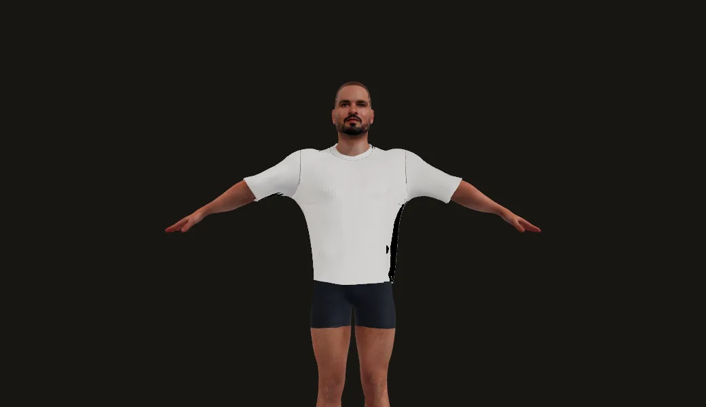
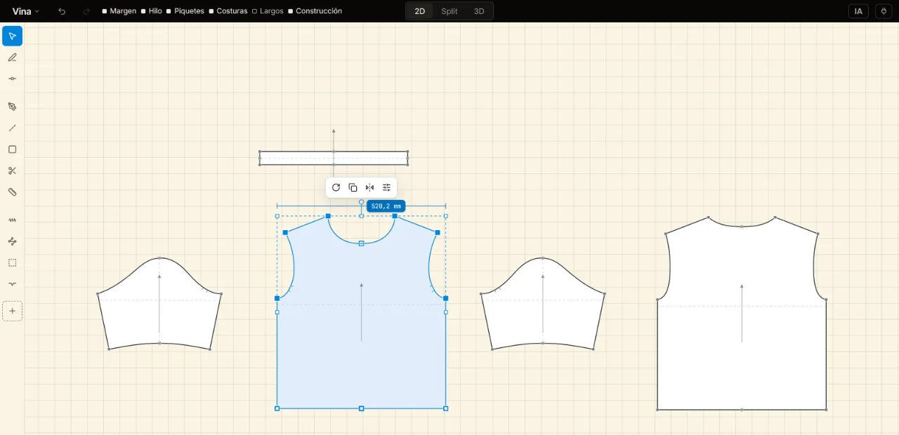
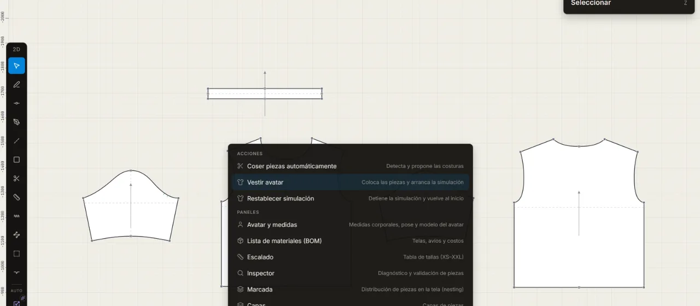

Traza el patrón, mira la caída.
Vina es un CAD de patronaje que se abre en el navegador: patrón 2D editable, tela simulada en tiempo real sobre un avatar y un copiloto que distingue una pinza de un piquete.

Simulando · WebGPU
Fig 0.1 · El taller
Lo que hace hoy
Un lienzo de papel con tu patrón, un visor 3D con el avatar y las herramientas de siempre en el orden de siempre.

Trazado
Pluma, rectángulo, piquetes y márgenes de costura, con el hilo dibujado y las cotas escritas donde miden. Las pinzas entran con tu DXF.
Costura
Cose las piezas automáticamente o borde a borde, y mira las costuras cerrarse en el 3D.
Caída
Tela simulada en tiempo real sobre el avatar, con WebGPU dentro del navegador. Mapa de ajuste desde el primer fotograma.

- Lee
- DXF-AAMA · DXF-ASTM · dialectos Gerber y Lectra
- Escribe
- DXF-AAMA · PDF a escala 1:1 · BOM (CSV) · glTF · USDZ · vuelta 360°
- Copiloto
- Pídele que añada una pinza o que audite los márgenes. Las mismas herramientas que tú, y cada cambio se puede deshacer. Con tu propia llave.
En construcción
Lo que todavía no está
Lo encontrarías en el taller de todas formas. Mejor leerlo aquí primero.
- Escalado de verdad. Hoy las tallas escalan en proporción; las reglas por punto vienen después.#915
- Una marcada que se pueda exportar. El panel de marcada estima el consumo de tela y ahí se queda.ROADMAP
- Una herramienta de pinza. Las pinzas llegan con tu DXF o por el copiloto, todavía no con la pluma.ROADMAP
- Archivos de proyecto. Tu trabajo vive en este navegador hasta que los .vina se puedan guardar.#15
- La interfaz en inglés. El taller habla español.#964
- Telas medidas sobre el tejido. Hoy hay treinta y dos preajustes.#1005
Cómo se hace
En abierto, una decisión a la vez
Cada cambio empieza como un diseño escrito, pasa por revisión y entra con sus pruebas. Los specs, la investigación y los errores están en el repositorio, así que la historia se cuenta sola.
Del diario del taller
- 2026-10-09Tu propio agente puede trabajar en el patrón abierto en Vina.#1238
- 2026-10-09Los paneles pasaron al papel: una ranura a la derecha, propiedades en dos niveles, el avatar en siete campos.#1239
- 2026-10-06Un arreglo de costura: la copa se parte donde cada mitad mide lo que su sisa.#1235
- 2026-07-10Costura real sobre el avatar: una camisa se forma y cae por primera vez.#934
github.com/sssamuelll/vina · MIT · v%VITE_VINA_VERSION%
Envía un patrón
Trae tu patrón, yo lo visto
Mándame un DXF por correo. Te lo devuelvo cosido y caído en Vina, con su mapa de ajuste, y te digo dónde Vina se quedó corta. Cada patrón que llega es una prueba que el taller todavía no ha pasado. Unos pocos al mes.